Artisan garnisseur · Farciennes
Une seconde viepour les fauteuilsqui ont une histoire.
Christophe Hiernaux refait vos sièges à l'ancienne, au crin et aux ressorts, ou plus moderne, en mousse. Classique ou contemporain, dans une multitude de tissus. Devis gratuit dans toute la Belgique.
« Monsieur Hiernaux réalise des merveilles […] »Corinne P., avis Google
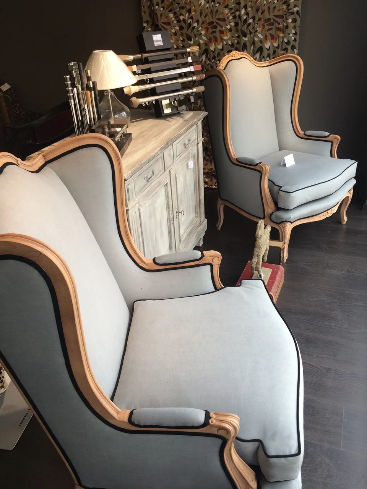
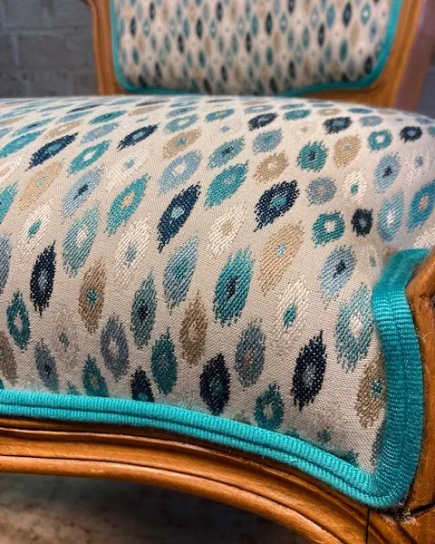
Détail : passepoil turquoise- Diplômé de l'IATAen 1995
- Près de 25 ansdans l'ancien commerce familial
- Devis gratuitdans toute la Belgique
- Atelier sur rendez-vousdu lundi au samedi
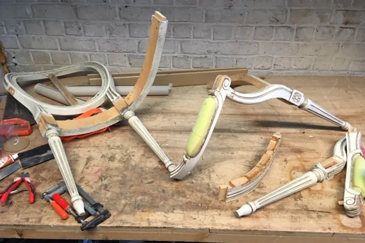
L'artisan
Un fauteuil refait comme si c'était le sien.
Tout a commencé en voyant un ami réparer une chaise. Formé et diplômé en 1995 à l'IATA, l'Institut des arts techniques et de l'artisanat, Christophe Hiernaux s'est installé dans l'ancien commerce de ses parents, à Farciennes. Il y travaille depuis près de 25 ans pour une clientèle fidèle.
Ce qu'il préfère : remettre à neuf et au goût du jour le mobilier ancien, travailler de nobles matières, et donner une seconde vie aux vieux fauteuils porteurs d'une histoire.
« J'apprécie un travail minutieux et méticuleux, je m'attelle toujours à réaliser un fauteuil comme si c'était le mien. »Christophe Hiernaux, sur son site
Le garnissage à l'ancienne
Couche après couche, sous le tissu.
Trois étapes d'un même canapé, photographiées à l'atelier. Tout ce que le tissu cachera ensuite est refait à la main.
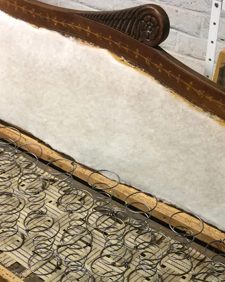
Les ressorts
Posés dans le bâti, une fois le siège mis à nu.
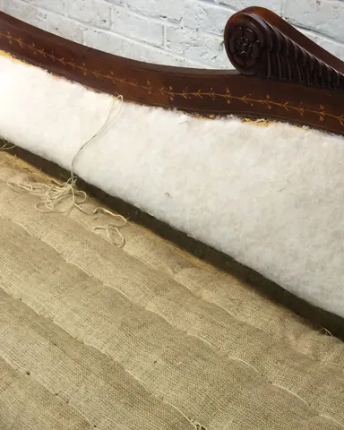
La garniture
Montée et piquée sous une toile de jute.
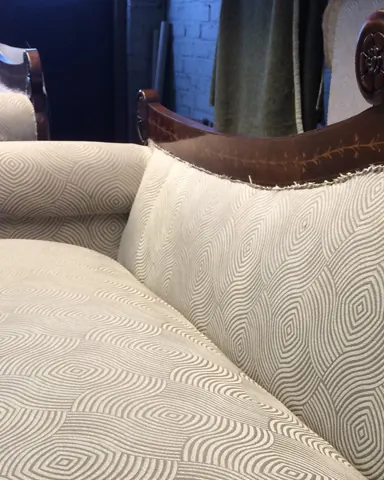
Le tissu
Tendu et fini, au ras du bois sculpté.
À l'ancienne
Garnissage traditionnel au crin et aux ressorts, pour les sièges d'époque.
Plus moderne
Garnissage en mousse, pour un travail plus contemporain.
Savoir-faire
Du siège à toute la pièce.
Recouvrir une chaise, restaurer une bergère, confectionner des tentures : tout se fait au même atelier.
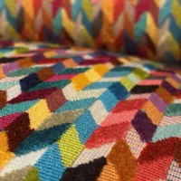
Garnissage et recouvrement
Sièges de tous styles, classiques ou contemporains.
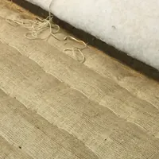
Travail à l'ancienne
Crin et ressorts, comme on garnissait autrefois.
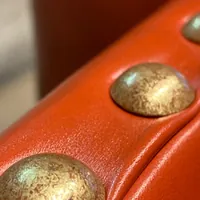
Cuir
Restauration et coloration du cuir.
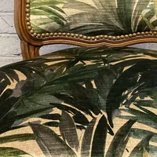
Tissus et similis
Une multitude d'étoffes et de matières.
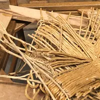
Cannage et rempaillage
Pour les assises cannées ou paillées.
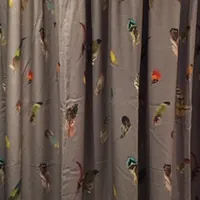
Tentures et stores
Confectionnés sur mesure.
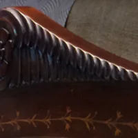
Patine, laquage et sablage
Le bois remis au goût du jour.
Projets de décoration
Têtes de lit, comptoir, et bien d'autres.
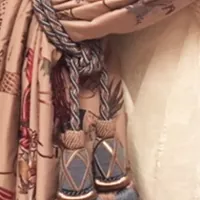
Passementerie
Un grand choix pour les finitions.
Devis gratuit dans toute la Belgique.
Demander le devisRéalisations
Sortis de l'atelier.
Bergères, médaillons, chaises, canapés, têtes de lit, tentures : quelques pièces parmi plus d'une centaine publiées par l'atelier.
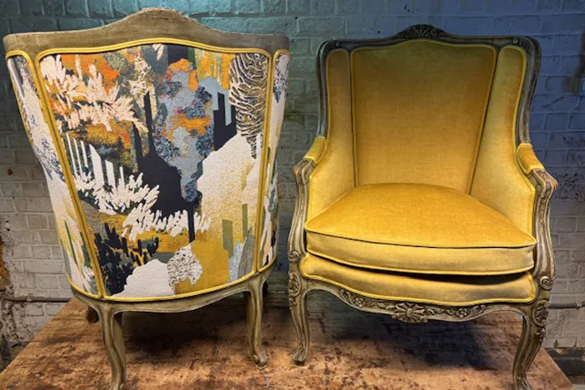
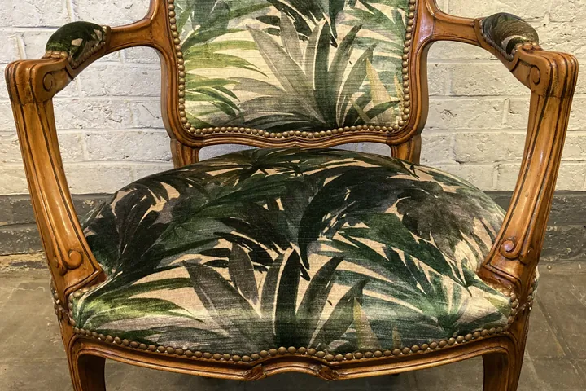
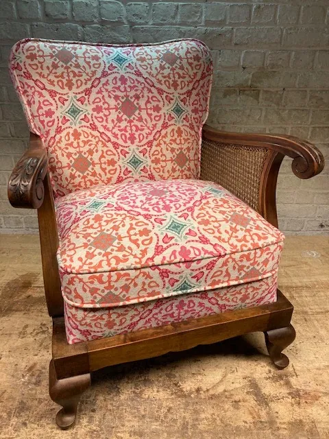
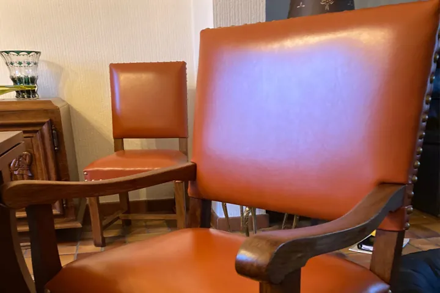
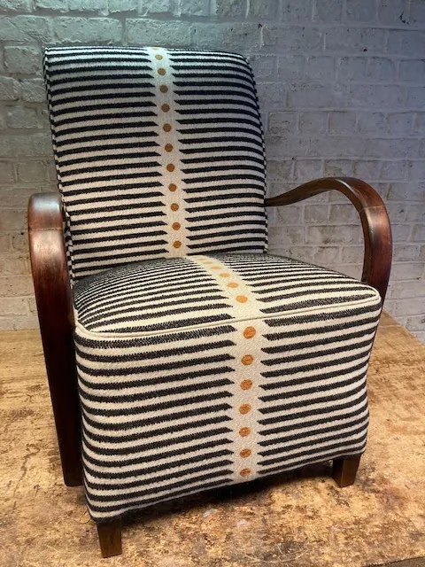
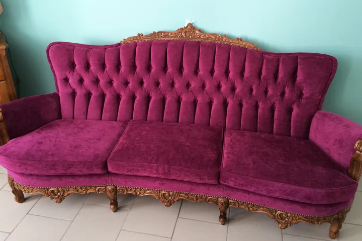
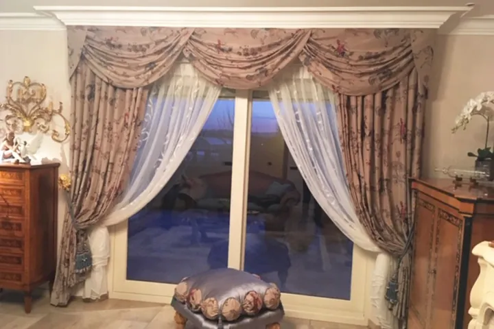
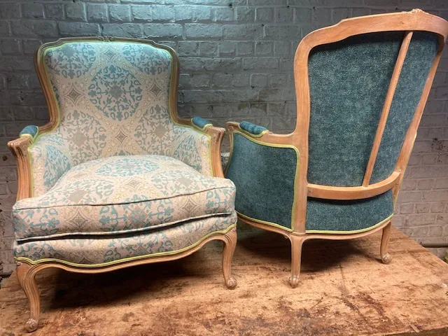
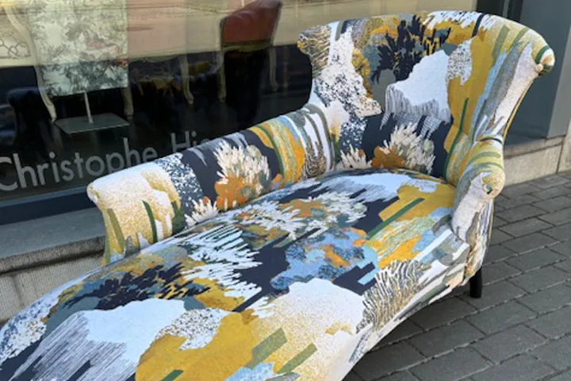
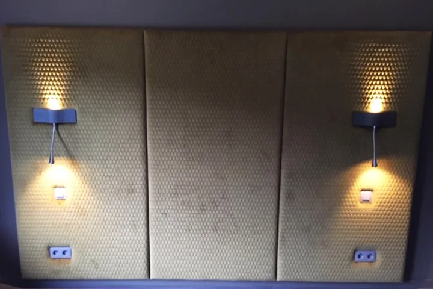
Avis
Ce qu'en disent ses clients.
Avis laissés sur la fiche Google de l'atelier, cités mot pour mot.
Tissus et passementerie de grandes maisons.
Les marques présentées par l'atelier sur son site, pour choisir l'étoffe de votre siège ou de vos tentures.
Lelièvre, Casamance, Houlès, Zimmer + Rohde, JAB, Osborne & Little, Sahco, Luciano Marcato, Gastón y Daniela, Casadeco, Casal, Kobe, Aristide, Buvetex, Deletex, Diabolo, Vano, Peggy & Françoise.
Devis gratuit
Montrez-lui votre siège.
Dites ce qu'il faut refaire et choisissez un moment pour passer à l'atelier, du lundi au samedi, sur rendez-vous. Le devis est gratuit.
Contact
Passez à l'atelier.
Ouverture de l'atelier
- lundi
- sur rendez-vous
- mardi
- sur rendez-vous
- mercredi
- sur rendez-vous
- jeudi
- sur rendez-vous
- vendredi
- sur rendez-vous
- samedi
- sur rendez-vous
- dimanche
- fermé
Garnissage HiernauxRue Albert 1er 9, 6240 Farciennes · Facebook